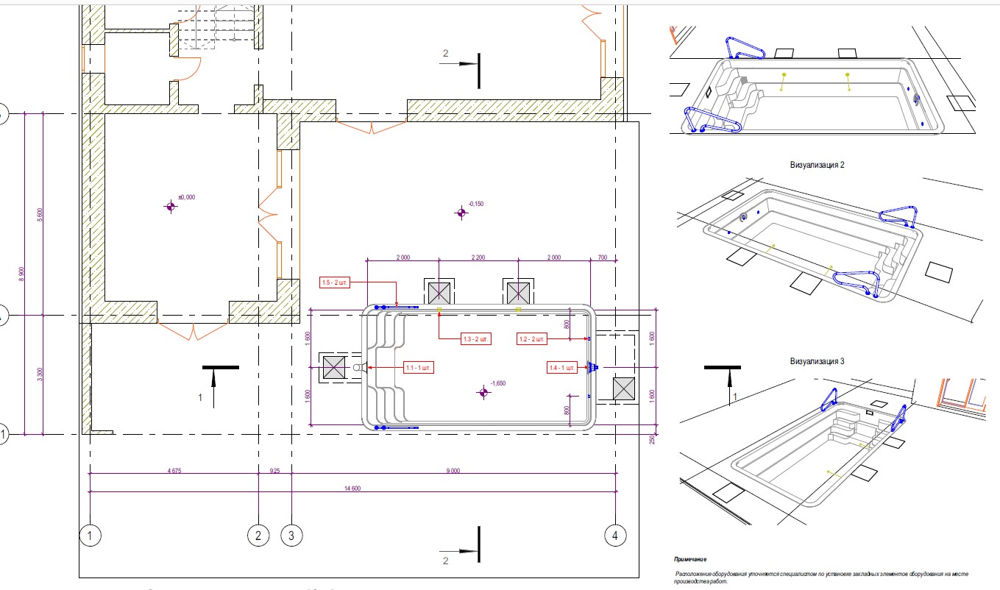

Введение
Композитная чаша: что проверить до заказа и монтажа
Композитный бассейн — это заводская чаша из слоистого композиционного материала. Готовая геометрия упрощает часть работ на площадке, но не отменяет подготовки основания, доставки, установки и подключения оборудования.
Первый вопрос — подходит ли выбранная модель участку и сценарию использования. Проверьте габариты чаши, глубину, входную группу, расположение оборудования и место для обхода, а затем сопоставьте их с планом участка.
Для монтажа важны не только размеры котлована. Нужно заранее оценить подъезд транспорта и техники, условия выгрузки, грунты и возможное воздействие грунтовых вод. Эти исходные условия влияют на проект основания и последовательность работ.
Статья посвящена особенностям выбора и установки композитной чаши. Сравнение композитного и бетонного бассейнов по свободе формы, отделке и организации работ приведено в отдельном сравнительном материале.
Если решение ещё не принято, сравнивайте не только чаши, но и полный объём работ на участке: доставку, подготовку, монтаж и подключение.
Критерии
Четыре проверки до выбора модели
Проверьте, подходит ли заводская форма назначению бассейна и планировке участка. Если нужны нестандартные размеры, радиусы или встроенные зоны, выясните, доступны ли они у выбранного производителя.
Сверяйте длину, ширину и глубину чаши, входную группу, выступы и расположение закладных элементов. На плане покажите чашу, обходную зону и доступ к оборудованию.
Состав поставки зависит от модели: лестница, форсунки, донный слив и подсветка могут входить в комплект или заказываться отдельно. Поэтому цена чаши не равна стоимости готового бассейна.
Отдельно оцените полный состав проекта: доставку, подготовку участка, монтаж, инженерные подключения и обходную зону. Разница в цене чаши сама по себе не показывает разницу стоимости бассейнов под ключ.
В коммерческом предложении и проекте должны совпадать название и версия модели, комплектность и технический чертёж. Это позволит сверять монтаж не с похожей чашей из каталога, а с фактически заказанной оболочкой.
Геометрия и комплектность
На плане проверьте размеры чаши, глубину, входную группу и закладные элементы вместе с обходом и доступом к оборудованию.
Подъезд и доставка
Маршрут доставки должен учитывать габариты чаши, проезды, повороты и препятствия над дорогой. Способ разгрузки и подъёмную технику согласуют для конкретного участка.
Условия грунта и воды
Грунт, рельеф и сезонный уровень грунтовых вод влияют на подготовку котлована и монтажные решения. При высоких грунтовых водах риск всплытия пустой или частично опорожнённой чаши зависит от конструкции и условий участка; дренирование и слив проверяют по проекту.
Документы производителя
Запросите руководство по монтажу выбранной модели и условия гарантии. Требования к основанию, засыпке, фиксации и заполнению различаются; численные инструкции одной чаши нельзя применять к другой. Выбор оборудования и проверка сметы разобраны в статье об оборудовании и руководстве по смете.
Расчет
Получить расчет стоимости
Подготовим ориентир бюджета, состав работ и инженерные решения под ваш участок, дом и желаемый формат эксплуатации.

Инженерия
Почему монтаж композитной чаши зависит от участка
Композитная оболочка поступает на площадку готовой, поэтому точность подготовки котлована и основания особенно важна: после доставки форму чаши уже нельзя произвольно изменить на месте.
До земляных работ сопоставляют проектные отметки, габариты выбранной модели, доступ техники и данные об участке. При сложных грунтовых или гидрогеологических условиях монтажные решения должен определить профильный проектировщик.
Основание и обратную засыпку выполняют по инструкции изготовителя конкретной чаши и проекту. Материал засыпки, способ уплотнения, временная фиксация и порядок наполнения — взаимосвязанные параметры. Универсальную послойную толщину или состав смеси без руководства модели назначать нельзя.
Во время установки контролируют положение чаши и согласованность уровней заполнения и засыпки именно так, как требует производитель. Несоблюдение его последовательности может привести к смещению или деформации оболочки; точные допуски берут из документации, а не из общих советов.
Трубопроводы и закладные элементы нужно согласовать с выбранной геометрией до монтажа. После установки чаши доступ к некоторым соединениям ограничен, поэтому схема обвязки и оборудование должны быть подготовлены заранее.
Подбор циркуляции, фильтра и насоса выполняют по объёму, назначению и гидравлической схеме бассейна. Общие принципы собраны в статье о фильтрации; эта страница не заменяет расчёт оборудования.
Приёмка должна подтвердить соответствие чаши проектным отметкам, комплектность и выполнение контрольных операций, предусмотренных руководством выбранной модели.
- Чертёж выбранной модели, инструкция по монтажу и письменные условия гарантии.
- Проектные отметки, данные об участке и доступная информация о грунте и грунтовых водах.
- Расположение закладных элементов, схема трубопроводов и состав подключаемого оборудования.
Решения о дренировании, допустимости опорожнения и действиях при высоком уровне грунтовых вод принимают по проекту участка и документации производителя, а не по универсальному совету.
Проект
Обсудить проект бассейна
Разберем план участка, архитектуру дома, сроки и желаемый уровень автоматизации, чтобы предложить решение без визуальных и технических компромиссов.
Этапы
Последовательность подготовки и монтажа
Работы с готовой оболочкой требуют согласованного графика: подрядчики, доставка и подготовка площадки должны быть увязаны с документацией конкретной модели.
До начала работ распределите ответственность за поставку чаши, земляные работы, установку, подключения и устройство обходной зоны. Границы этих этапов стоит закрепить в предложении и договорных документах.
Сроки планируют после оценки участка и объёма работ. Универсальный срок монтажа нельзя переносить на площадки с иными условиями, доступом и составом проекта.
Следующие контрольные пункты помогают проверить, что предложение подрядчика охватывает не только поставку оболочки, но и её подготовку к эксплуатации.
-
01
Подтверждение модели и комплекта
До заказа подтвердите точную модель, её комплектацию, чертёж и руководство по установке. Зафиксируйте в предложении, какие элементы входят в поставку.
-
02
Подготовка участка и доставки
Подъезд, разгрузку и готовность котлована проверяют до приезда чаши. Способ доставки должен соответствовать габаритам модели и реальным ограничениям участка.
-
03
Установка и контроль положения
После позиционирования чаши проверяют её отметки и положение по проекту и инструкции. Если обнаружено отклонение, его устраняют до последующих работ.
-
04
Заполнение, засыпка и подключения
Заполнение, обратная засыпка и подключения выполняются в последовательности по руководству конкретной модели. Её требования нельзя заменять инструкцией к другой чаше.
-
05
Проверка и передача документов
При передаче владельцу сверяют комплектность и проект, проверяют доступные соединения и передают документы на чашу и оборудование. Общий ход проекта раскрыт в статье о строительстве под ключ.
Рекомендации
На чём не стоит основывать выбор
Не выбирайте композитную чашу только по каталожной цене или фотографии. Цена проекта зависит от модели, доставки, подготовки участка, монтажа, оборудования, обходной зоны и других согласованных работ; универсальную сумму без этих данных определить нельзя.
Не переносите срок монтажа и гарантийные условия с одной марки или модели на другую. Запрашивайте актуальный документ производителя и проверяйте, кто отвечает за поставку, установку и подключение.
Не принимайте решение об основании, засыпке, дренаже или сливе воды по чужому объекту. Эти решения зависят от проекта, условий участка и руководства конкретной чаши.
Если стандартная заводская геометрия подходит участку и сценарию использования, композитный вариант может быть удобен для рассмотрения. Если требуется индивидуальная форма или сложные архитектурные решения, сравните его с бетонной чашей по полному составу проекта, а не только по материалу.
Перед договором зафиксируйте модель, комплектность, границы работ, исключения, монтажные документы и порядок приёмки. Смета должна показывать проект целиком, а не только стоимость оболочки.
Вопросы ухода за водой и регулярного обслуживания раскрыты отдельно в руководстве по обслуживанию бассейна; здесь основной фокус — проверка чаши и условий её установки.
Консультация
Заказать консультацию
Ответим на вопросы, оценим исходные данные и предложим следующий шаг: концепцию, выезд специалиста или предварительный расчет.